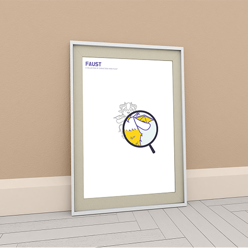

Web Design Studio FUAST
판타지를 주제로 한 미디어 매체에서 등장하는 생명체에 대한 설명이 잘못되어 있을 때, 사람들이 그 설명만 믿고 잘못된 특징을 기억하거나 어떤 유래가 있는지 모르고 있는 경우가 많다.
이 문제를 해결하기 위해 책 ‘파우스트’를 주제로 선정하여 책 속에서 등장하는 판타지적 존재들에 대해서 캐릭터와 올바른 정보를 함께 보여주는 사이트를 생각하게 되었다.
Interactive Media VENUS
성형수술은 의사와의 상담으로부터 시작되는데 수술 이후의 모습을 시뮬레이션하여 수술에 대한 이해와 결정을 돕는다. 이러한 수술 시뮬레이션은 의사의 메모나 그리기 능력에 의존하지만 비너스는 환자의 3D 스캔 이미지를 이용해 사실적으로 시뮬레이션함으로써 수술 후 모습을 수술 결정 전에 확인해 볼 수 있도록 해주는 모바일 어플리케이션이다.

Multimedia Design
소락[小樂]
다양한 운동 문제를 겪는 시니어들에게 맞는 장소와 운동을 제공하고 각 개인의 특성에 맞는 관리 서비스를 제공해주는 서비스이다. 이를 통해 시니어들은 건강과 즐거움을 함께 얻을 수 있다.